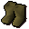

Slave boots

| Config name | slave_boots |
| Item id | 1846 |
| Value | 1 gp |
| Weight | 24oz |
| Members | Yes |
| Tradeable | No |
| Stackable | No |
| Equip slot | feet |
| Options | Wear |
| Defined in | scripts/quests/quest_desertrescue/configs/desertrescue.obj |
Slave boots
Comfortable desert shoes.
Dropped by
| NPC | Level | Quantity | Rarity | Via | Notes |
|---|---|---|---|---|---|
| 10 | 1 | Always | if inv_total(inv, slave_boots) = 0 |
Quests
Referenced in scripts
scripts/quests/quest_desertrescue/scripts/mining_slave.rs2scripts/quests/quest_desertrescue/scripts/quest_desertrescue.rs2